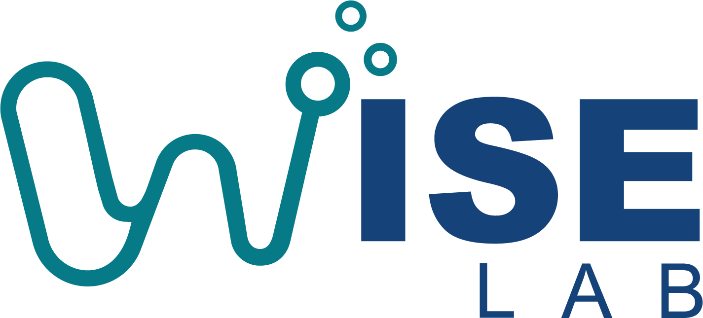

PATH 01
AI Foundations
基础能力
适合学生、科研助理，以及任何刚开始在学习、研究或行政工作中使用 AI 的成员。
- 理解能力、限制与责任
- 用好 ChatGPT、Claude 与 Copilot
- 识别 skills、connectors 与 agents 的边界

外部学习资源导航 · WISE LAB
这里不是课程平台，也不会替你连接数据或执行自动化。它把团队成员带到可信的官方课程、吴恩达的学习资源和经筛选的技术参考，并说明每项能力适合谁、何时该用、何时不该用。
从角色开始。 选择最接近你当前工作的路径；以后可随时进入其他路径深化学习。
01 · CHOOSE A PATH
每条路径都先给出一个可立即开始的 Core 资源；后续材料按需要打开，而不是要求一次学完。
PATH 01
适合学生、科研助理，以及任何刚开始在学习、研究或行政工作中使用 AI 的成员。
PATH 02
适合博后、技术型研究人员及希望设计、评估或部署 AI/agentic 系统的成员。
PATH 03
适合教职、研究负责人和需要改善沟通、会议、写作、数据与日常规划的人。
02 · CONNECTED WORKFLOWS
它们是应学习的能力，也是之后可能开展的独立项目；并非本网站提供的功能或默认承诺。
数据来自 Outlook、Teams、Calendar、SharePoint、实验记录，还是外部业务系统？先定义系统和数据分类。
核实 QUT 的许可、管理员配置和允许使用的 connector；优先采用机构管理的 Microsoft 365 来源。
只连接完成目标所需的最少数据，明确谁会看到结果，以及是否需要保留、索引或同步数据。
自动简报、RAG 回答或 agent 输出都必须由责任人检查后再发送、决策或行动。
03 · TRUSTED CURATION
稳定、官方或成熟的第一资源；足以让学习者立即行动。
在完成 Core 后，针对具体任务或技术缺口继续学习。
文档、示例和教程；不要求线性完成。
涉及许可证、beta 功能、机构配置或快速变化的产品能力。